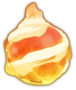

Fireball
Updated: 26 August 2026 · By the Goblins Farm team
Throws a giant exploding fireball at the closest defense
Reference page. This entry carries verified level data but does not yet have a written strategy section. Behaviour and counter notes are being added across the wiki; the tables below are as complete as the source snapshot allows.
- Hero
- Grand Warden
- Rarity
- Epic
- Max level
- 27
- Blacksmith needed
- 1
- Ability
- Throws a giant exploding fireball at the closest defense
Stats by level
| Level | DPS | Hitpoints | Upgrade cost | Blacksmith |
|---|---|---|---|---|
| 1 | 21 | — | — | 1 |
| 2 | 24 | — | 120 Shiny Ore | 1 |
| 3 | 27 | — | 240 Shiny Ore + 20 Glowy Ore | 1 |
| 4 | 30 | — | 400 Shiny Ore | 1 |
| 5 | 33 | — | 600 Shiny Ore | 1 |
| 6 | 36 | — | 840 Shiny Ore + 100 Glowy Ore | 1 |
| 7 | 40 | — | 1,120 Shiny Ore | 1 |
| 8 | 44 | — | 1,440 Shiny Ore | 1 |
| 9 | 47 | — | 1,800 Shiny Ore + 200 Glowy Ore + 10 Starry Ore | 1 |
| 10 | 51 | — | 1,900 Shiny Ore | 1 |
| 11 | 56 | — | 2,000 Shiny Ore | 1 |
| 12 | 60 | — | 2,100 Shiny Ore + 400 Glowy Ore + 20 Starry Ore | 1 |
| 13 | 63 | — | 2,200 Shiny Ore | 3 |
| 14 | 67 | — | 2,300 Shiny Ore | 3 |
| 15 | 71 | — | 2,400 Shiny Ore + 600 Glowy Ore + 30 Starry Ore | 3 |
| 16 | 74 | — | 2,500 Shiny Ore | 5 |
| 17 | 77 | — | 2,600 Shiny Ore | 5 |
| 18 | 80 | — | 2,700 Shiny Ore + 600 Glowy Ore + 50 Starry Ore | 5 |
| 19 | 82 | — | 2,800 Shiny Ore | 7 |
| 20 | 84 | — | 2,900 Shiny Ore | 7 |
| 21 | 87 | — | 3,000 Shiny Ore + 600 Glowy Ore + 100 Starry Ore | 7 |
| 22 | 89 | — | 3,100 Shiny Ore | 8 |
| 23 | 92 | — | 3,200 Shiny Ore | 8 |
| 24 | 94 | — | 3,300 Shiny Ore + 600 Glowy Ore + 120 Starry Ore | 8 |
| 25 | 96 | — | 3,400 Shiny Ore | 9 |
| 26 | 99 | — | 3,500 Shiny Ore | 9 |
| 27 | 101 | — | 3,600 Shiny Ore + 600 Glowy Ore + 150 Starry Ore | 9 |
Where these numbers come from. Read from Clash of Clans' own game files, client build 18.400.21. They are exact for that build and do not reflect anything released after it, so verify in game before committing an upgrade.
Game values are read from Supercell's own game files, reproduced as fan content under Supercell's Fan Content Policy. Goblins Farm is not affiliated with, endorsed, sponsored, or specifically approved by Supercell, and Supercell is not responsible for it.
Goblins Farm is not affiliated with, endorsed by, sponsored by, or specifically approved by Supercell. Clash of Clans is a trademark of Supercell Oy. This material is unofficial fan content produced under Supercell's Fan Content Policy. Game values change with every update; always verify in-game before committing an upgrade.